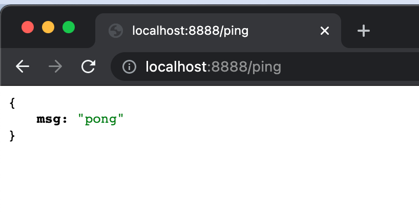
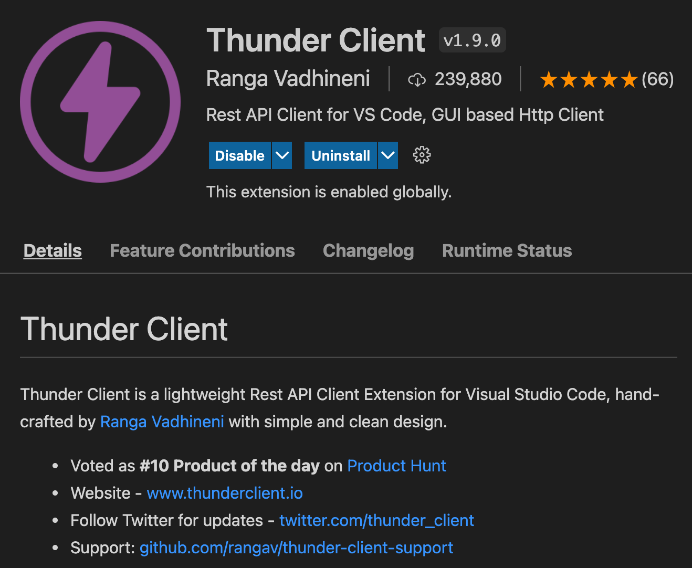
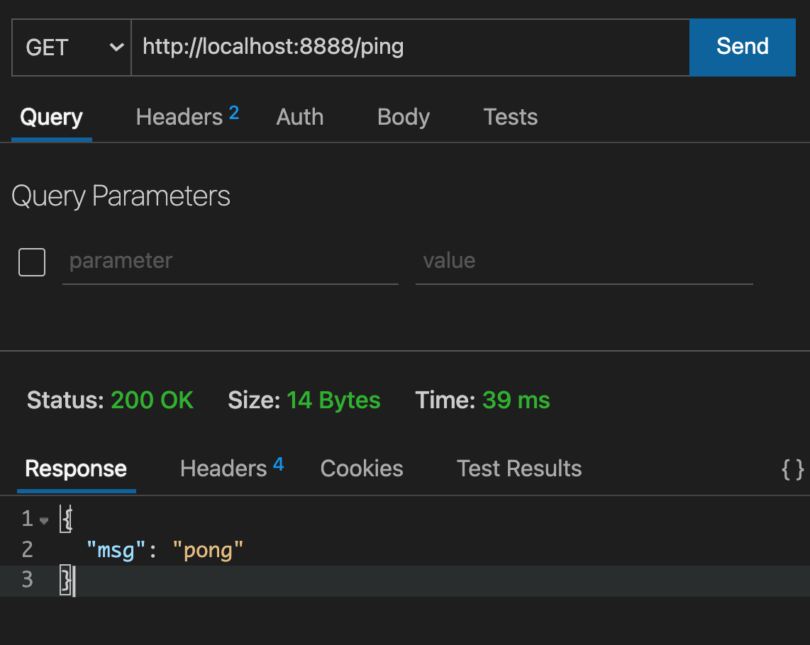
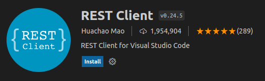
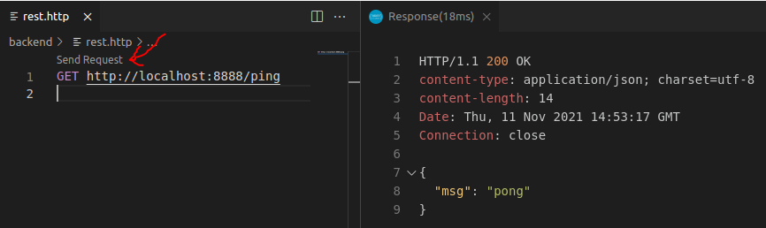
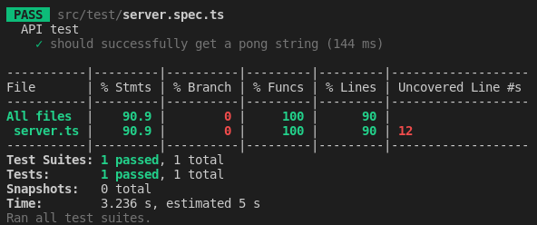
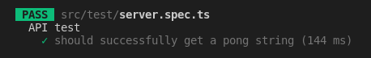
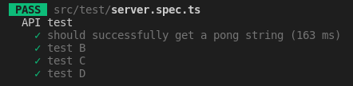
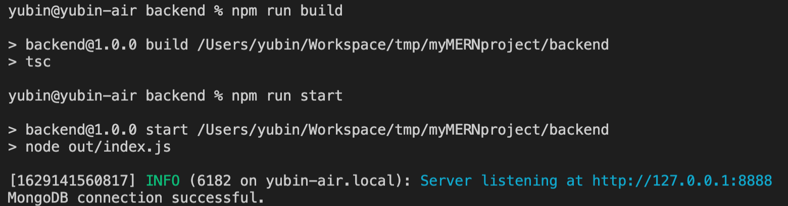

Yubin, Hsu
TSID / NTAP
mkdir myMernProject
cd myMernProject
mkdir backend
cd backend
npm init
npm i fastify pino-pretty dotenv
npm i -D typescript @types/node
npx tsc --init
Edit backend/tsconfig.json
"include": ["src/**/*.ts"],
"exclude": ["node_modules"],
"compilerOptions": {
"outDir": "./out",
"rootDir": "./src",
}
Create backend/.env
FASTIFY_PORT=8888
FASTIFY_ENABLE_LOGGING=true
ENV=dev
Create backend/src/server.ts
import fastify, { FastifyInstance, FastifyReply, FastifyRequest } from 'fastify'
import { Server, IncomingMessage, ServerResponse } from 'http'
const server: FastifyInstance<Server, IncomingMessage, ServerResponse> = fastify({
logger: { prettyPrint: true }
})
const startFastify: (port: number) => FastifyInstance<Server, IncomingMessage, ServerResponse> = (port) => {
server.listen(port, '0.0.0.0', (err, _) => {
if (err) {
console.error(err)
}
})
server.get('/ping', async (request: FastifyRequest, reply: FastifyReply) => {
return reply.status(200).send({ msg: 'pong' })
})
return server
}
export { startFastify }
Create backend/src/index.ts
import { startFastify } from './server'
import * as dotenv from 'dotenv'
dotenv.config()
const port = process.env.FASTIFY_PORT || 8888
// Start your server
const server = startFastify(Number(port))
export { server }
tsc
node out/index.js
Define custom npm scripts
"scripts": {
"build": "tsc",
"start": "node out/index.js"
},
Use custom npm script
npm run build
npm run start
visit the endpoint

Thunder Client

Send request by Thunder Client

REST Client

Send request by REST Client
create a .http file, send request

Create .gitignore
node_modules
out
get more .gitignore example
Jest
Setup jest
npm i -D jest ts-jest @types/jest
Jest config
https://jestjs.io/docs/configuration
create backend/jest.config.js
module.exports = {
preset: "ts-jest",
transform: {
"^.+\\.(t|j)sx?$": "ts-jest",
},
testEnvironment: "node",
moduleFileExtensions: [
"ts",
"tsx",
"js",
"jsx",
"json",
"node",
],
testTimeout: 20000,
testPathIgnorePatterns: [
"/node_modules/",
"/out/"
]
}
npm scripts
backend/package.json
"scripts": {
"test": "jest --verbose --coverage --runInBand",
"build": "tsc",
"start": "node out/index.js"
}
Create test file
Create src/test/server.spec.ts
import { FastifyInstance } from 'fastify'
import { startFastify } from '../server'
import { Server, IncomingMessage, ServerResponse } from 'http'
describe('API test', () => {
let server: FastifyInstance<Server, IncomingMessage, ServerResponse>
beforeAll(async () => {
// await dbHandler.connect()
server = startFastify(8888)
await server.ready()
})
// afterEach(async () => {
// await dbHandler.clearDatabase()
// })
afterAll(async () => {
try {
// await dbHandler.closeDatabase()
await server.close()
console.log('Closing Fastify server is done!')
} catch (e) {
console.log(`Failed to close a Fastify server, reason: ${e}`)
}
})
it('should successfully get a pong string', async () => {
const response = await server.inject({ method: 'GET', url: '/ping' })
expect(response.statusCode).toBe(200)
expect(response.body).toStrictEqual(JSON.stringify({ msg: 'pong' }))
})
})
Run test
npm run test

describe & it
describe('API test', () => {
it('should successfully get a pong string', () => {
// Some testing condition
})
})

describe('API test', () => {
it('should successfully get a pong string', () => {
// Some testing condition
})
it('test B', () => {})
it('test C', () => {})
it('test D', () => {})
})

expect
expect(response.statusCode).toBe(200)
expect(response.body).toStrictEqual(JSON.stringify({ msg: 'pong' }))
expect(1 + 2).toBeLessThan(4)
expect(1 + 2).toBeLessThanOrEqual(3)
expect(['A', 'B', 'C']).toContain('B')
expect(1 + 2).not.toBe(4)
Synchronous
describe('Math test', () => {
it('1 + 2 should be 3', () => {
const a = 1
const b = 2
expect(a + b).toBe(3)
})
})
Asynchronous
// pong.ts
async getPong(): Promise<string> {
return new Promise((resolve) => {
resolve('pong')
})
}
// pong.spec.ts
describe('asynchronous test', () => {
it('get pong', async () => {
const result = await pong.getPong()
expect(result).toBe('pong')
})
it('still get pong', async () => {
await expect(pong.getPong()).resolves.toBe('pong')
})
})
Add mongo support
Start a mongodb server
docker run -d -p 27017:27017 mongo
./mongod.exe
Install mongoose
npm i mongoose
npm i -D @types/mongoose
Add env variables in backend/.env
MONGO_HOST=localhost
MONGO_PORT=27017
MONGO_DATABASE=myMERN
Create backend/src/plugins/mongoose.ts
import mongoose from 'mongoose'
const host = process.env.MONGO_HOST || 'localhost'
const port = process.env.MONGO_PORT || 27017
const database = process.env.MONGO_DATABASE || 'fastify'
const establishConnection = () => {
if (!process.env.JEST_WORKER_ID && mongoose.connection.readyState === 0) {
mongoose.connect(
`mongodb://${host}:${port}/${database}`,
(err) => {
if (!err) console.log('MongoDB connection successful.')
else console.log('Error in DB connection : ' + JSON.stringify(err, undefined, 2))
}
)
}
}
export { establishConnection }
Edit backend/src/server.ts
import { establishConnection } from './plugins/mongoose'
// ...
server.listen(port, '0.0.0.0', (err, _) => {
if (err) {
console.error(err)
}
establishConnection()
})
// ...
Start server

MongoDB connection successful
Install mongodb-memory-server
npm i -D mongodb-memory-server
Create src/test/db.ts
import mongoose from 'mongoose'
import { MongoMemoryServer } from 'mongodb-memory-server'
const mongod = new MongoMemoryServer()
/**
* Connect to mock memory db.
*/
export const connect = async (): Promise<void> => {
await mongod.start()
const uri = mongod.getUri()
await mongoose.connect(uri)
}
/**
* Close db connection
*/
export const closeDatabase: () => Promise<void> = async () => {
await mongoose.connection.dropDatabase()
await mongoose.connection.close()
await mongod.stop()
}
/**
* Delete db collections
*/
export const clearDatabase: () => Promise<void> = async () => {
const collections = mongoose.connection.collections
for (const key in collections) {
const collection = collections[key]
await collection.deleteMany({})
}
}
Rebuild automatically when the code is changed
npm i -D concurrently nodemon
"dev": "concurrently \"tsc -w \" \"nodemon out/index.js\""
npm run dev
Install prettier
npm i -D prettier
Add backend/.prettierrc
{
"semi": false,
"singleQuote": true,
"printWidth": 120,
"trailingComma": "none",
"arrowParens": "always"
}
package.json"fix-prettier": "prettier --write \"./{src,test,examples,scripts}/**/*.ts\""
npm run fix-prettier
end